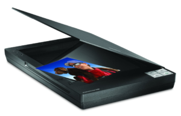

|  |
Scanner:แบบนี้จะมีกลไกคล้าย ๆ กับเครื่องถ่ายเอกสาร เราแค่วางหนังสือหรือภาพไว้ บนแผ่นกระจกใส และเมื่อทำการสแกน หัวสแกนก็จะเคลื่อนที่จากปลายด้านหนึ่งไปยังอีกด้านหนึ่ง ข้อจำกัดของสแกนเนอร์ แบบแท่นนอนคือแม้ว่าอ่านภาพจากหนังสือได้ แต่กลไกภายในต้องใช้ การสะท้อนแสงผ่านกระจกหลายแผ่น ทำให้ภาพมีคุณภาพไม่ดีเมื่อเทียบกับแบบแรก |